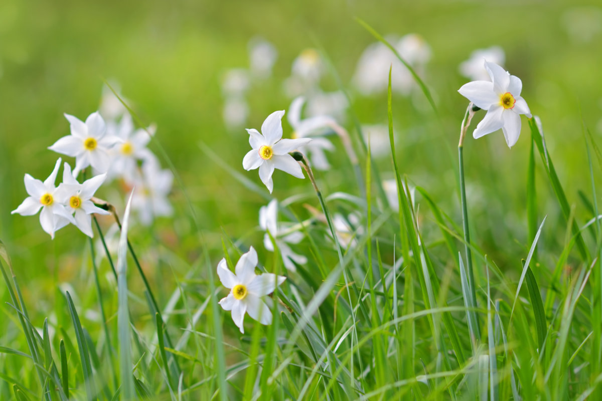
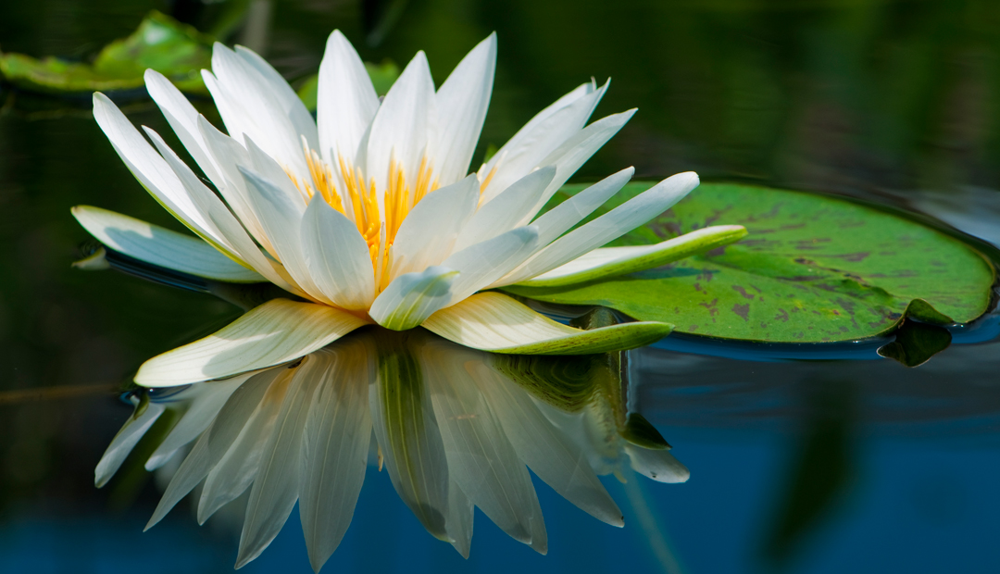

Рослини з Червоної книги
Всі рослини, які занесені до Червоної книги охороняються законом нашої держави і їх знищувати заборонено. Тому, перш ніж зірвати квітку, не слід забувати, що ви можете нанести збитку нашій природі, так як серед представників рослинного світу це можуть бути рослини, які занесені до Червоної книги. Нехай краще квітуча рослина залишиться рости та радувати зір оточуючих.
Давайте більш детально спробуємо розглянути деякі рослини, які занесені до Червоної книги України.
Багато росли, занесених до Червоної книги України ростуть в Карпатах. На Закарпатті можна зустріти нарцис вузьколистий. Цю дивовижну квітку з ніжними пелюстками та тонким ароматом можна побачити, відвідавши знамениту долину нарцисів. Ця червонокнижна рослина починає бурхливо цвісти наприкінці травня.
Потребує нашої уваги і охорони така болотяна рослина, як латаття біле. Ця лікарська рослина поширена вздовж Дніпра в його західних та південно-західній частинах України, а також в плавнях Інгульця, Південного Бугу та інших річках. Через втручання в природу людського фактору та осушення водоймі, латаття біле було занесене до Червоної книги.
На вершинах карпатських гір можна зустріти і таку червонокнижну рослину, як білотка альпійська, в народі називають Шовкова косиця або квітка едельвейсу. Суцвіття цієї квітки нагадує лапу лева. Едельвейс росте на вершинах гір та вапняних скелях. Період цвітіння можна спостерігати починаючи з червня і аж до середини серпня.

Ще одним рідкісним представником рослинного світу, який занесений до Червоної книги, є лісова лілія. Ця дивовижна рослина росте в листяних та мішаних лісах України. Але шкода, що лісова лілія в наших ліса останнім часом стала рідкістю. Ця квітуча рослина крім яскравого вигляду має цілющі лікарські властивості та широко використовується в медицині.